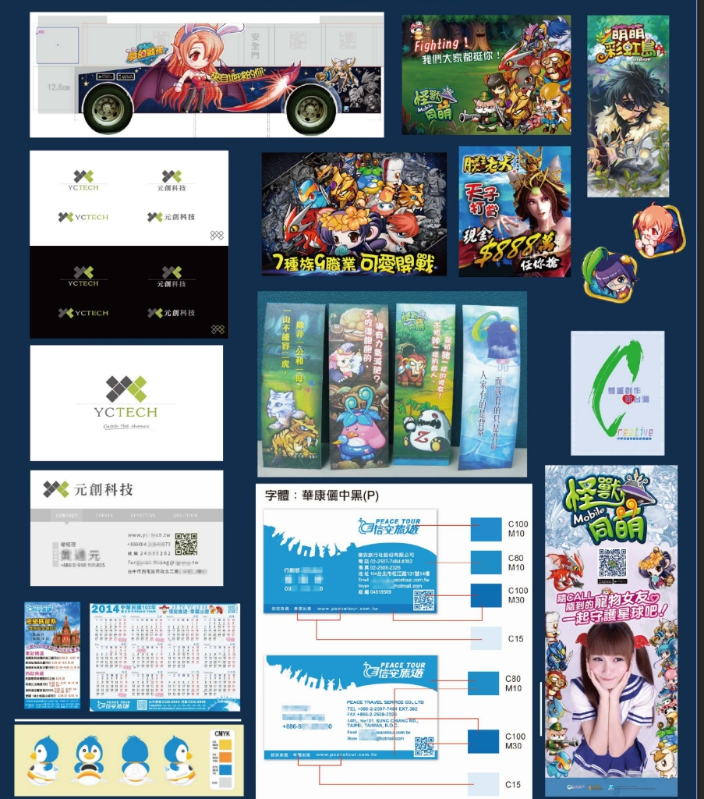
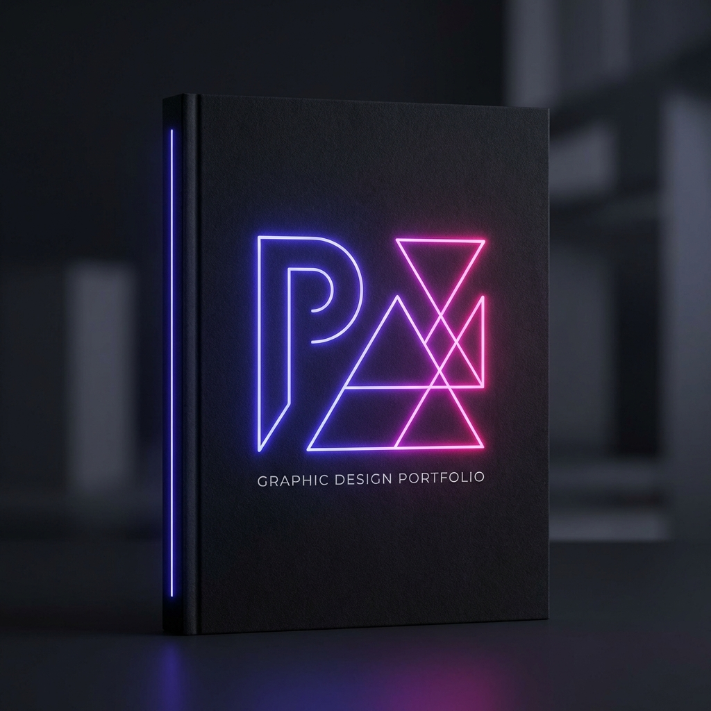
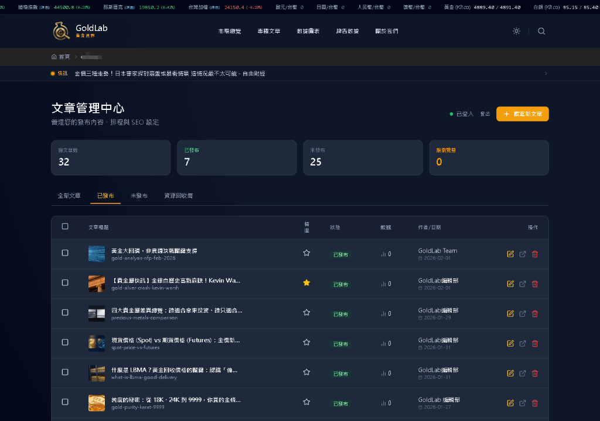
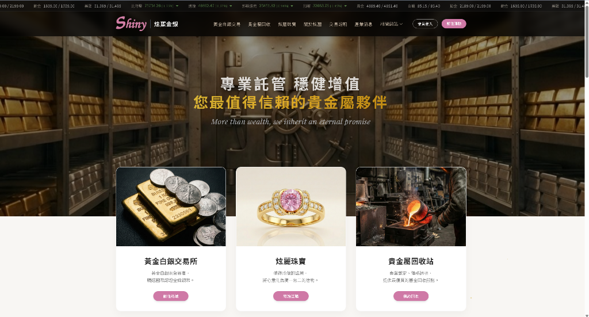

Selected Works
作品列表


Graphic Design Portfolio
Branding • Layout • Visual Design

Web Portal & Article Dashboard
獨立規劃設計/製作 • RWD Web • Full Info Site • SEO Strategy

形像官網重新規劃製作
需求規劃 • 風格提案 • UI/UX設計 • 網站開發

Motion Showreel
Lottie / SVGA / AE / Flash
Motion & Micro-interactions
Animation Collection • Interaction Design